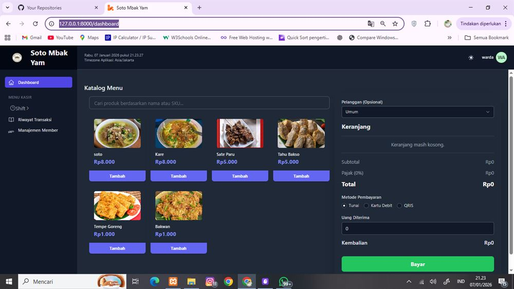

Point of Sale for Restaurant
A dedicated point of sale and transaction management application tailored for culinary operations (Soto Restaurant), featuring rapid checkout and automated sales reporting.

01 / Project Overview
Restaurant POS is a responsive desktop and web checkout system built to streamline restaurant transactions, table-side order processing, receipt generation, live menu item availability, and end-of-day managerial audits in a culinary environment.
02 / Problem & Motivation
Rush-hour lunch traffic frequently produced lengthy customer queues caused by manual handwritten order slips. Discrepancies between kitchen dish production and physical cash drawer balances made automated, traceable digital receipts essential.
03 / My Role & Contributions
As the Software Developer for this project:
- Analyzed dining service workflows directly on-site (waitstaff order intake to kitchen and cashier counter).
- Engineered high-velocity client-side checkout interactions supporting touchscreens and keyboard shortcuts.
- Developed ingredient inventory tracking and real-time menu availability toggles (In Stock / Sold Out).
- Constructed automated query algorithms in MySQL for daily, weekly, and monthly revenue reconciliation.
04 / Technical Stack
05 / Design & Architecture Decisions
The cashier layout was constructed with large touch-friendly targets to facilitate fast inputs on commercial POS terminals. Transactions utilize database-level atomic operations in MySQL, preventing half-written invoices if power or printer connection is interrupted.
06 / Screenshots & Implementation Evidence
The interface supports dynamic item quantity adjustments, instant cash change calculation, split-billing, and immediate thermal receipt print triggers.
07 / Challenges & Lessons Learned
Latency was the critical performance bottleneck: staff could not afford page reloads during checkout. I engineered the transaction cart completely in client-side JavaScript, enabling instant item additions and zero-latency price calculations.
08 / Outcome & Project Status
The system helped cashiers cut customer checkout duration by 50%, eliminated handwritten calculation errors, and provided transparent daily analytics for the business owners.